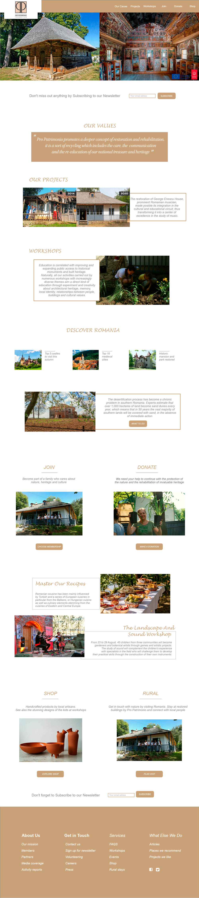
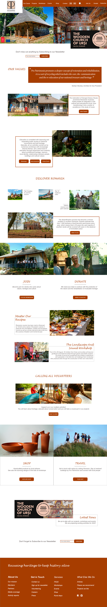
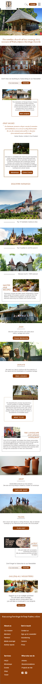

Images edited with Adobe XD. Desktop screen size: 1920px. The first prototype was the initial design chosen for Pro Patrimonio Foundation, a charity that aims to protect, rehabilitate and educate about Romanian heritage. For the re-design of it website, I decided to go for a light look and with less option in the navigation bar, as I believe the user could feel overwhelmed with the multiple choices at the beggining and it could get lost or loose interest. In addition, I decided to choose a more visual design to showcase the past and current projects from Pro Patrimonio. The titles, such as Our projects and Workshops are clickable buttons that will take the user to the correct page. I also believe that having clear values at the top of the website makes it easier for the user to understand what Pro Patrimonio stands for. My next step was deciding which kind of content to add before asking the user to join as a member or to donate money to the organisation. Then, I created a section about Discovering Romania with interesting information about this beautiful country, as it might stil be unknown for many people. The design chose is again mainly visual with a short and sharp title. The last image has a larger size to create an impact into the reader, with the aim of make him/her click in the button and keep navigating through the website. The footer was based in four columns.
Desktop screen size: 1920px. For the second prototype I decided to take a even more visually design. I have added more options to the navigation bar, but I sill believe that are less overwhelming than the current options on Pro Patrimonio website, as I only chosen clear links to key pages. The colour is now a dark red-brown option because I ran the Colour Contrast Analyser, I realised that the previous colour did not met all the criterias for visibility in smaller devices. In addition, I believe that this new colour matches with the colour paletter of their images. I added the image of the award Pro Patrimonio recently won and that is currently at the top of their website, but I cut the right end as it was not visually appealing. I also included the name of the Vice-President of the charity, as it provides to the values a more personal touch. TOther changes are: the following section has buttons included, Discovering Romania has larger pictures to capt the attention of the users, as well as the images from Join, Donate, Shop and Travel sections, giving more relevance to these parts in the website. I have also added a section for News before the reminder to subscribe to the newsletter at the top of the footer and a Volunteering part, as this will be beneficiail for Pro Patrimonio because charities always need people. The Recipes and Music workshop section have also more importance in the layout. The footer has been alligned to the 16 lines of initial design that has been followed for both prototypes and a slogan has been added to remind the user the mission of the organisation. Downsides: I have used the only English logo from Pro Patrimonio that I have found in internet. However, it is impossible to read The Romanian National Trust as it becomes too small. The logo should be re-designed and I highly recommend to use an English version to make the organisation more inclusive for international users, as they are also based in the UK.
Width screen size: 375 px - iPhone 6, 7, 8 and SE. The mobile design follows the second desktop prototype in terms of colors, layout and content. A hamburguer menu has been colocated on the right to hide the options the user can use to navigate around the website. This approach is considered more approapiate for smaller devices. I have also encountered the same problem as previously with the desktop design regarding the typography of the logo (this has to be redesigned in the future). Footer follows a two columns layout.
